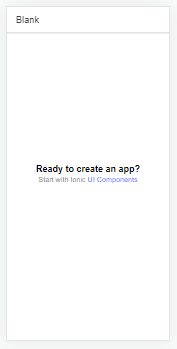

<ion-header [translucent]="true">
  <ion-toolbar color="tertiary">
    <ion-button slot="start">
      <ion-menu-button menu="first"></ion-menu-button>
    </ion-button>
    <ion-title> RESTAURANTE PRATO CHEIO </ion-title>
  </ion-toolbar>
</ion-header>

<ion-content [fullscreen]="true">
  <ion-card>
    <ion-card-header>
      <ion-card-title>Prato do dia</ion-card-title>
      <ion-card-subtitle>Epinafre nordestino</ion-card-subtitle>
      
      
      

    </ion-card-header>

    <ion-card-content>
      <p>Não é uma refeição, é uma experiência regional.</p>
    </ion-card-content>
  </ion-card>
</ion-content>

<ion-footer>
  <ion-toolbar color="warning">
    <ion-title> </ion-title>
  </ion-toolbar>
</ion-footer>